Connect the 「office」 tool to 「Hanbit Office Quote Advisor」. Fill a selected Word template with a quote, then inspect the preview for calculation and document errors.
Your installation needs these fixes
The run screens in this chapter were captured on an installation with the following fixes applied (2026-10-30). Before these fixes reach the installation repository, using a selected template or opening the result document may fail. This notice will be removed once the fixes are included.
- Agent: process-gpt-deepagents #10 — enables filling the selected Word template.
- Interface: process-gpt-vue3 #237 — fixes result-document preview and download URLs.
- Installation: process-gpt-infra-docker #1 — provides storage for the generated result.
Turn a draft into a document#
In Chapter 11, you taught quote-writing rules through a skill. Now you will select a company Word template and ask the agent to fill it.
The price list supplies amounts. The skill supplies writing rules. The Word template is the document to fill. 「office」 is the external tool used to create the document.
Jinyoung Jang registers the server and connects it to 「Hanbit Office Quote Advisor」. The exercise uses Hanbit Trading's order for 25 Mesh Chair Air and 25 3-Drawer Mobile Pedestals.
In this English run, the draft total was wrong. The same wrong total went into the Word document. Follow both the tool connection and the checks needed before sending the result to a customer.
Try it 1 — Register the MCP server#
- Open 「MCP Servers」 in settings.
- Click 「Add New MCP Server」.
- Replace the contents of the 「New MCP」 editor with the JSON below.
- Click 「Add」 and check the new server card.
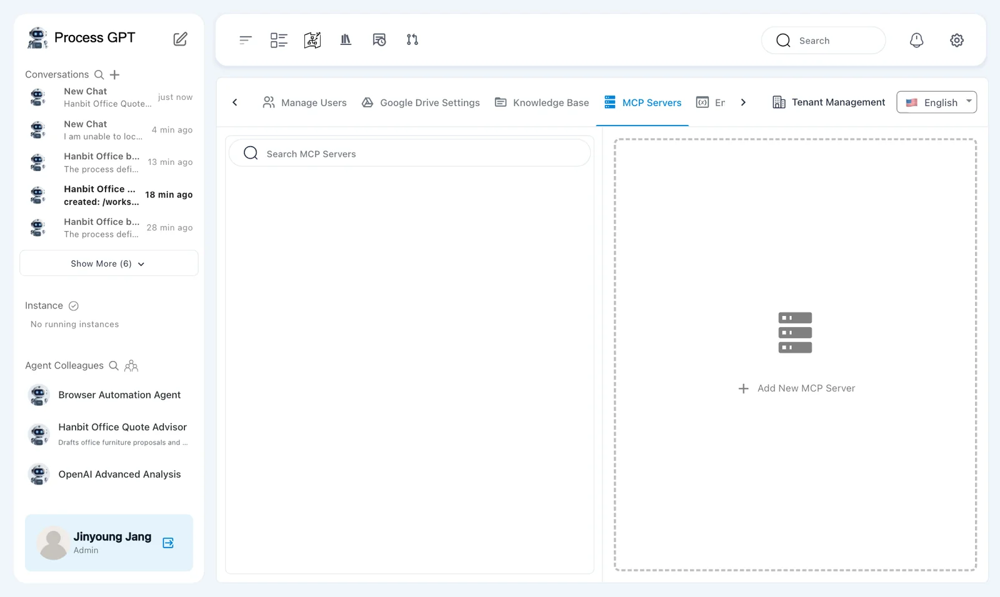
The editor initially contains { "mcpServers": {} }. Replace the whole value, including its braces. The server name is office.
{
"mcpServers": {
"office": {
"url": "http://process-gpt-office-mcp:1192/mcp",
"type": "http"
}
}
}
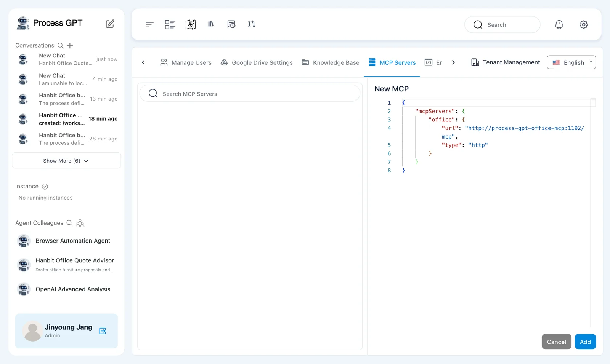
This is the Office MCP service address in the captured installation. It registers a tool endpoint for the agent. It is not a document URL to open in your browser.
The saved card shows 「Office」, 「Web Service」, and 「Validation failed」. The server was saved as enabled.
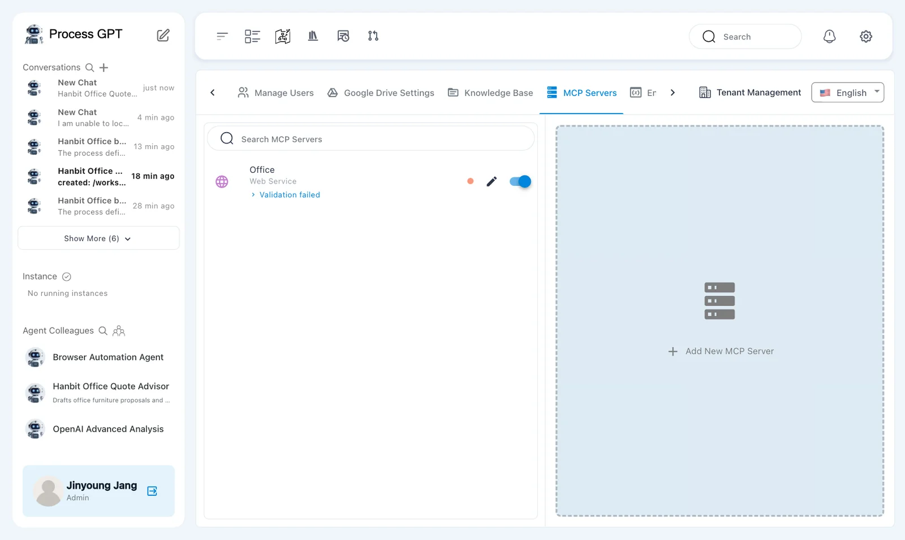
The card shows 「Validation failed」
This is a defect seen in the captured installation. The tools still worked with that message present. Check the actual tool result later in this chapter; the card alone does not prove that document generation succeeded or failed.
Try it 2 — Select the agent's tool#
Registering a server does not attach it to every agent. Select the registered tool for the quote advisor.
- Open 「Hanbit Office Quote Advisor」 and use the pencil beside its name.
- Check the 「Tools」 field.
- Remove any generated tool-name entries that do not correspond to a connected server.
- Select 「office Web Service」.
- Check that 「office」 is selected, then save the agent changes.
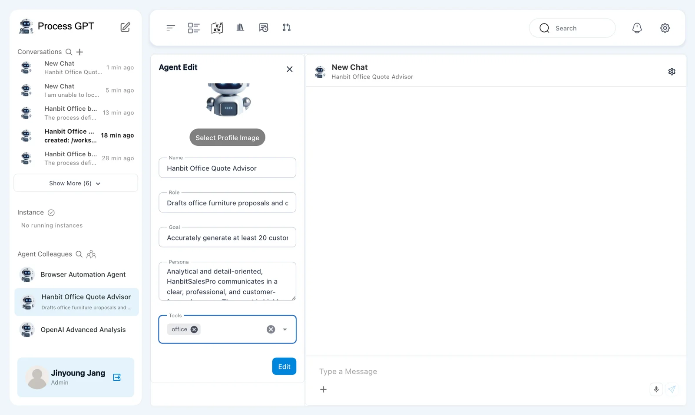
Names suggested during agent generation do not themselves create tool connections. Here, select the server you just registered.
Keep the 「hanbit-quote-format」 skill from Chapter 11. Attaching a skill and connecting a tool serve different purposes. The skill gives instructions; the tool performs document operations.
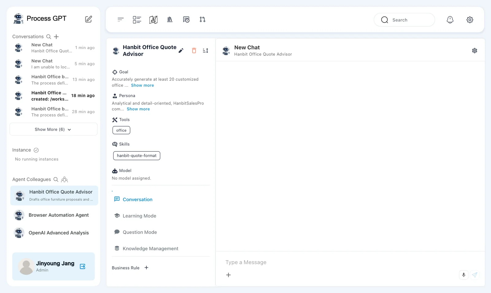
Try it 3 — Upload the company template#
Download Hanbit Office templates (zip) and extract it. The 「Hanbit-Office-Templates」 folder contains 「Hanbit-Quote-Template.docx」.
- Find 「Hanbit-Quote-Template.docx」 in the extracted folder.
- Upload 「Hanbit-Office-Templates」 to 「Knowledge Base」 using the method from Chapter 8.
- Wait until the document row shows 「indexed」.
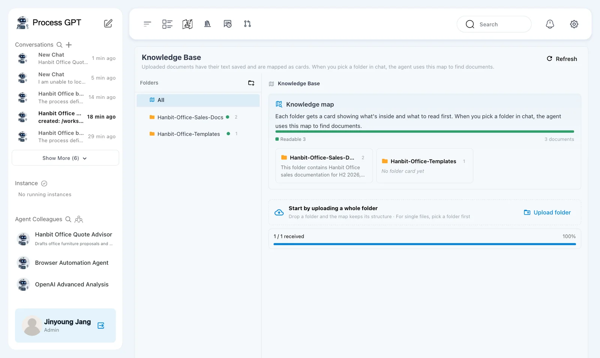
Open the original template and note its customer, items, totals, and terms sections. Later, compare the generated document with that structure. Checking only the final amount can miss duplicated headings or unfinished customer details.
Try it 4 — Ask about available tools#
- Send the greeting below to 「Hanbit Office Quote Advisor」.
- Read the reply for document-generation and editing capabilities.
- Prepare to select the price list and template in the same conversation.
Hello. What tools can you use right now?
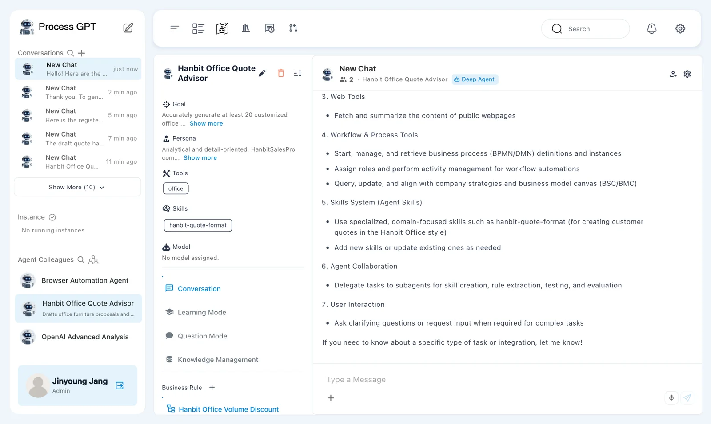
The reply listed filesystem tools, document tools, and web tools. Its document capabilities included 「Generate and edit DOCX and HWPX」 based on templates and conversion between HTML and DOCX or HWPX. The chat header showed 「Deep Agent」.
This reply describes available capabilities. It is not evidence that a document has been created. Next, request a draft, then ask the agent to fill the selected template.
Try it 5 — Select the sources and create a draft#
- Open the conversation's plus menu and choose 「Knowledge Base」.
- Select 「Hanbit-Office-Price-List.pdf」 from 「Hanbit-Office-Sales-Docs」 and 「Hanbit-Quote-Template.docx」 from 「Hanbit-Office-Templates」.
- Send the request below.
- Check quantities, unit prices, discounts, and totals against the price list.
Search the selected knowledge base for the Hanbit Office price list (Hanbit-Office-Price-List.pdf) and use it. Hanbit Trading wants 25 Mesh Chair Air and 25 3-Drawer Mobile Pedestals delivered to its Seoul head office. Write a draft quote.
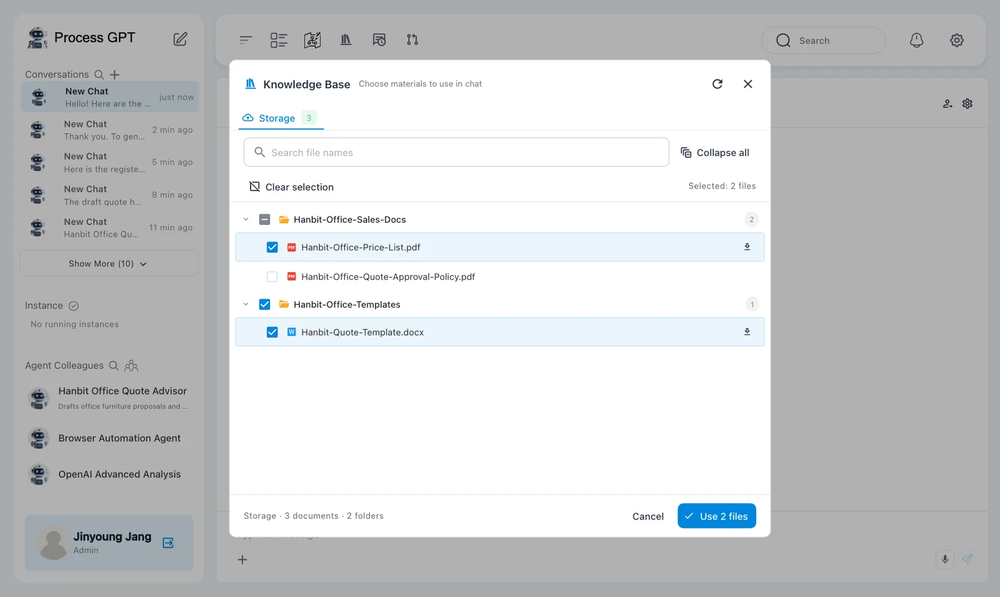
The draft arrived after about 35 seconds. Its item amounts used inconsistent discount treatment.
| Item | Qty | Unit price (KRW) | Discount shown | Amount (KRW) shown |
|---|---|---|---|---|
| Mesh Chair Air | 25 | 180,000 | 5% | 4,275,000 |
| 3-Drawer Mobile Pedestal | 25 | 95,000 | 5% | 2,375,000 |
The chair amount already included the 5% discount. The pedestal amount did not. The agent then added these amounts as the subtotal and applied another 5% discount.
| Total | Draft answer |
|---|---|
| 「Subtotal」 | KRW 6,650,000 |
| 「Volume discount」 | KRW 332,500, calculated as 6,650,000 × 5% |
| 「Installation fee」 | KRW 0 |
| 「Quote total (VAT excluded)」 | KRW 6,317,500 |
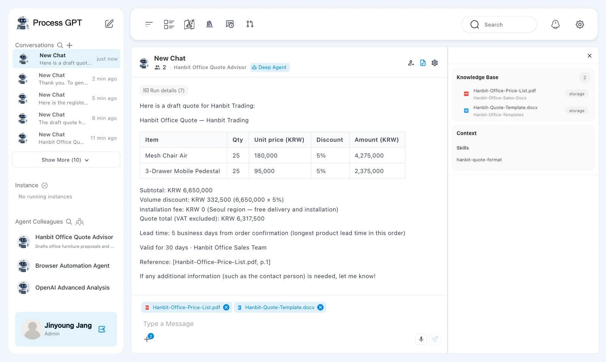
The correct calculation is:
Before-discount item amounts = 4,500,000 + 2,375,000
Subtotal = 6,875,000
Volume discount = 6,875,000 × 5% = 343,750
Installation fee = 0
Quote total, VAT excluded = 6,531,250
The answer also gave a lead time of 5 business days and cited 「Reference: [Hanbit-Office-Price-List.pdf, p.1]」. The citation did not make the calculation correct.
The agent still had rule 6 from Chapter 11. It nevertheless produced the wrong total. A rule that helped one answer does not guarantee the next answer.
Check the draft before creating the file
The correct total is KRW 6,531,250. In your own work, correct and recheck the draft before generating a customer document. The captured run continued with the wrong draft, so the next screens show that error carried into the Word file.
Try it 6 — Fill the selected Word template#
The captured run used the following request without correcting the draft first.
- In the same conversation, request a Word file using the selected template.
- Wait for the document result.
- Open the result link and inspect the preview.
- Compare the document's customer, items, and totals with the draft.
Now fill the selected Hanbit-Quote-Template.docx with exactly this quote using the office tool and give me the Word file.
After about 40 seconds, the reply said 「The draft quote has been filled into the Hanbit-Quote-Template.docx.」. It offered 「Hanbit-Trading-Draft-Quote.docx」 with a download link.
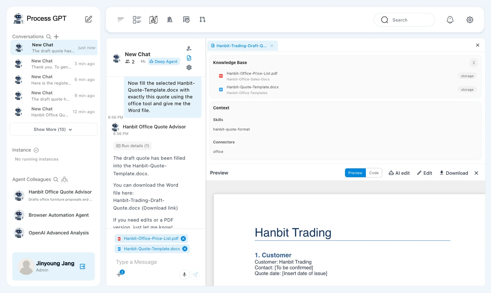
Clicking the link opened the 「Preview」 panel. The preview loaded successfully from storage.
The customer was Hanbit Trading. The contact remained 「[To be confirmed]」, and the quote date remained 「[Insert date of issue]」. These placeholders need review before delivery.
Creating a document does not correct its contents
The request asked the tool to use exactly the draft quote. The document retained the wrong total of KRW 6,317,500. Successful file generation is separate from correct prices, calculations, and customer details.
Try it 7 — Inspect the preview and check downloading#
The result panel has 「Preview」, 「Code」, 「AI edit」, 「Edit」, and 「Download」.
- Read the customer details and item table in 「Preview」.
- Check 「3. Totals」 against your own calculation.
- Compare headings, table structure, terms, and closing text with the original template.
- Try 「Download」. Confirm that a Word file actually reaches your device.
- If a file downloads, open it and compare it with the preview.
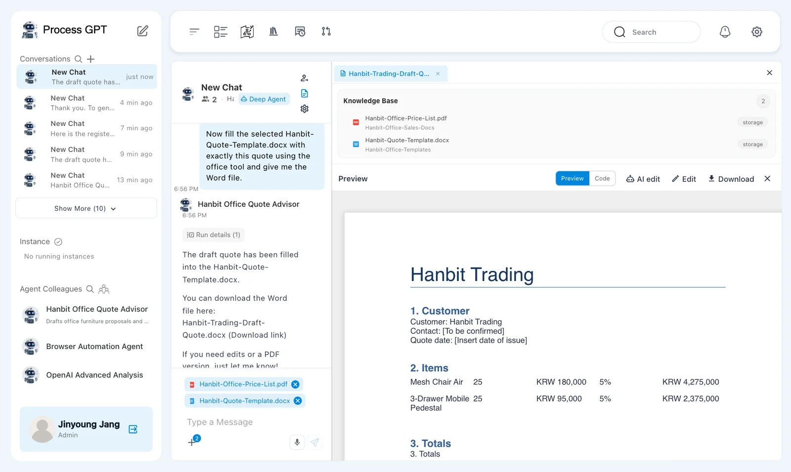
The preview contained these totals:
- 「Subtotal (items only)」: KRW 6,650,000.
- 「Volume discount (5% on subtotal)」: − KRW 332,500.
- 「Installation fee」: KRW 0.
- 「Quote total (VAT excluded)」: KRW 6,317,500.
The correct total remains KRW 6,531,250.

Check terms against the source as well. Text added by the agent is not automatically an agreed customer condition.
A local Word download was not verified
The preview worked, and the generated file was present in storage. The scripted download produced no download event in any of the three English runs. This chapter does not claim that a downloaded Word file was opened and checked. Verify the download separately on your installation.
The filled template still has defects
The result repeats 「3. Totals」 and displays raw ** characters. 「Hanbit Office Sales Team」 appears twice. The contact and quote date remain placeholders. Correct the arithmetic, duplicates, formatting, and missing details before sending the document.
Separate the roles of sources, skills, and tools#
Several inputs worked together in this conversation. Review each part according to its role.
| Input | Role in this exercise |
|---|---|
| Price list | Supplies prices, discounts, and installation fees. |
| 「hanbit-quote-format」 | Supplies quote-writing rules. |
| Word quote template | Supplies the document to fill. |
| 「office」 | Fills the template and creates the result document. |
Connecting a tool does not remove review. Check the draft's calculation first. Then check the document's calculation, headings, table structure, customer details, and terms.
This run demonstrated document generation and preview. It also demonstrated how an incorrect draft can become an incorrect document.
Next chapter#
You registered an external tool and attached it to the quote advisor. You filled a selected Word template and checked the result's arithmetic, formatting, and download limits.
In Chapter 15, you will work with decision rules. In Chapter 16, you will examine execution times and bottlenecks.
Check your understanding
- Why select 「office Web Service」 instead of relying on names suggested during agent generation?
- What request turns the chat draft into a Word document?
- What went wrong in this run, and what must be checked before sending the document?
Answers
- A suggested name does not establish a tool connection. 「office Web Service」 selects the registered MCP server.
- Ask the agent to fill the selected 「Hanbit-Quote-Template.docx」 with the checked quote using the 「office」 tool.
- The draft mixed amounts before and after discount, producing KRW 6,317,500 instead of KRW 6,531,250. That error entered the document. Also check duplicated headings and closing text, raw formatting characters, missing contact and date values, terms, and whether the Word file actually downloads.